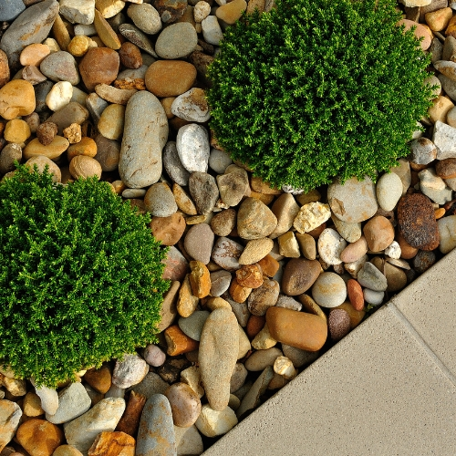
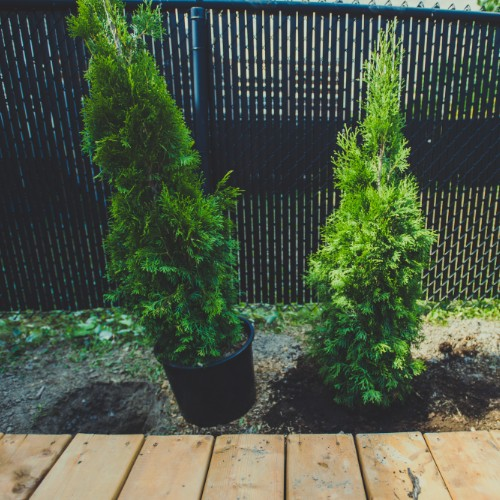

Zakładanie ogrodów
Ciach Ciach oferuje kompleksowe usługi zakładania ogrodów od podstaw. Nasze usługi obejmują niwelację terenu, sadzenie roślin, projektowanie ogrodów przydomowych, układanie kostki brukowej, budownictwo ogrodowe, systemy nawadniania, kładzenie trawy z rolki lub sianie jej w klasyczny sposób, a także kładzenie siatek na krety pod trawnik. Każdy projekt jest indywidualnie dopasowywany do potrzeb i wymagań naszych klientów.


Usługi - Konin i okolice
- Niwelacja terenu
- Projektowanie ogrodu
- Układanie kostki brukowej
- Kładzenie trawy z rolki
- Kładzenie siatki na krety
- Sadzenie roślin
12+
Lat doświadczenia
 Zapraszam do kontaktu
telefonicznego od rana do wieczora, chętnie porozmawiam o
tej usłudze i wszystko
wytłumaczę. Kamil
Zapraszam do kontaktu
telefonicznego od rana do wieczora, chętnie porozmawiam o
tej usłudze i wszystko
wytłumaczę. Kamil532 553 977